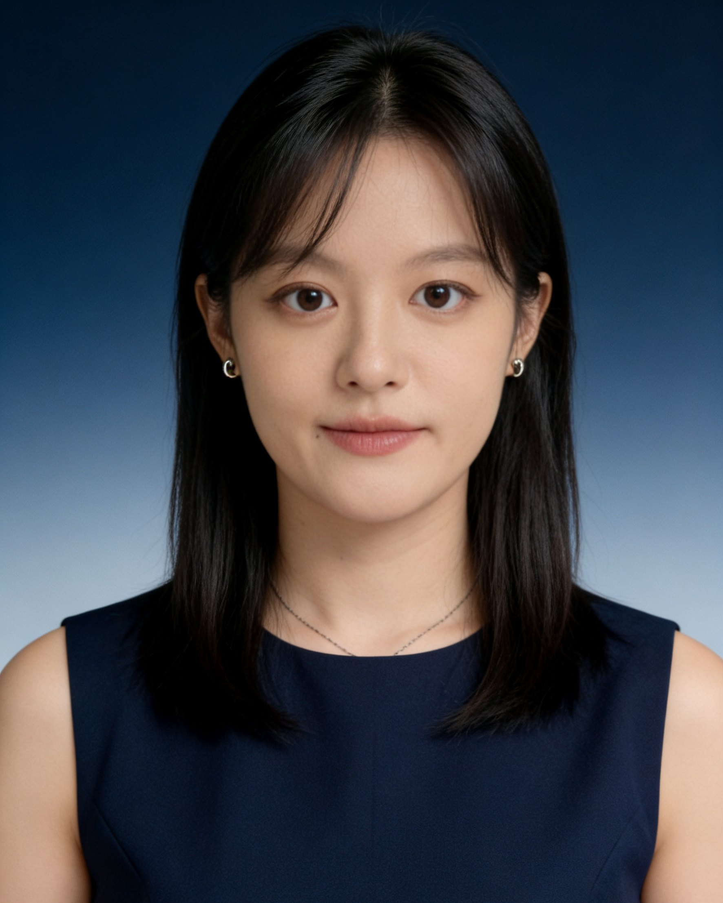
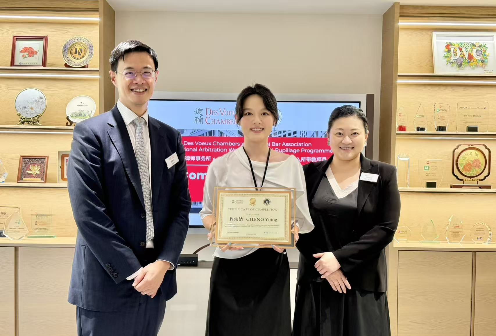

程轶婧律师上海市君悦律师事务所（MHP Law Firm）
在上海处理公司股权、股东纠纷与劳动争议。案子涉及外方时，可以直接用英文沟通、审阅中英文文件。
小股东查不了账？离职了还挂着法定代表人、被限高？代持的股权想显名？公司僵局想解散？这些是程律师主要处理的问题。
程轶婧，上海市君悦律师事务所律师，持中国律师执业资格，2023年12月起从事法律工作。办理公司股权与股东纠纷、劳动争议、合同与担保纠纷；美国范德堡大学法学院LL.M.，参与过中意投资并购、中东贸易合同纠纷等涉外项目，入选上海国际法律服务枢纽涉外人才名录。
- 执业机构
- 上海市君悦律师事务所（2026年7月起）
- 执业资格
- 中华人民共和国律师执业资格
- 执业证号
- 待补充（上线前必填：律师业务推广规则要求醒目标示）
- 从事法律工作
- 2023年12月起（实习、实习律师至执业律师）
- 工作语言
- 中文、英文
- 主要领域
- 公司股权与股东纠纷；劳动争议与用工合规；合同与担保纠纷；涉外投资与争议
- 教育背景
- 美国范德堡大学法学院 LL.M.；上海财经大学 经济法 法学学士
- 所内职务
- 君悦律师事务所证券与上市委员会委员
- 办公地址
- 上海市静安区南京西路1717号会德丰国际广场7楼
您遇到的，可能是这些问题
前五项是股东与公司之间的纠纷，后三项是融资、用工和合同问题。每项注明主要法律依据，以及程律师办理过的相关事务或撰写的文章。纯国内案件、涉及外方的案件都可以联系。
-
小股东查不了账，大股东把持公司
股东知情权纠纷。股东可以要求查阅公司会计账簿和会计凭证，公司拒绝的，可以向法院起诉，也可以委托会计师、律师一起查阅。
依据：《公司法》（2023年修订）第五十七条
相关经办：代理隐名股东诉请查阅会计账簿及凭证，法院支持将查阅范围扩展至会计凭证。
-
董事、高管或大股东损害公司利益，公司却不追究
股东代表诉讼。先书面请求监事会或董事会起诉；被拒绝、三十日内未起诉或情况紧急的，股东可以自己的名义直接起诉，新法还延伸到全资子公司。
依据：《公司法》（2023年修订）第一百八十九条
相关文章：公众号连载《小股东的大武器》七篇，梳理代表诉讼的起诉主体、前置程序和各阶段问题。
-
股权让别人代持，现在想“显名”
股东资格确认与股权代持纠纷。实际出资人登记为股东，一般需要其他股东半数以上同意；能证明过半数其他股东知情且未提出异议的，法院可能支持。
依据：《公司法司法解释（三）》第二十四条；《九民纪要》第二十八条
相关经办：代理隐名股东行使股东权利（查阅会计账簿及凭证）的诉讼。相关文章：《隐名股东如何“显名”？》。
-
已经离职，却还挂着法定代表人，被限高
涤除法定代表人登记。法定代表人辞任的，公司应当在三十日内确定新的法定代表人；公司不配合的，可以起诉请求涤除登记，限高问题需结合执行程序另行处理。
依据：《公司法》（2023年修订）第十条
相关经办：代理离职高管诉请涤除法定代表人登记，获法院支持。相关文章：《公司欠债，挂名法人被限高怎么办？》等。
-
公司僵局，股东会长期开不起来
公司解散与清算。经营管理发生严重困难、通过其他途径不能解决的，持有百分之十以上表决权的股东可以请求法院解散公司。
依据：《公司法》（2023年修订）第二百三十一条
相关经办：代理小股东提起公司解散之诉，逐项举证证明公司陷入僵局。
-
融了几轮资，各轮投资条款互相打架
投融资条款梳理与章程修订：优先认购权、反稀释、回购、优先清算等条款的冲突识别与衔接方案。
相关经办：为一家科技公司梳理多轮投资协议条款，协调投资方与创始团队诉求并修订章程。
-
辞退员工、经济补偿、竞业限制、工伤
劳动争议与用工合规：劳动合同解除、经济补偿与赔偿金、竞业限制与保密、工伤认定与赔偿、员工手册与规章制度、劳务派遣与外包。违法解除劳动合同的，赔偿金为经济补偿标准的二倍。
依据：《劳动合同法》第四十七条、第八十七条
-
合同违约、以物抵债、保证责任
合同与担保纠纷：违约责任、以物抵债协议履行、保证范围与期间等争议。
相关经办：代理保证人主张按约定范围承担责任，减免了超出约定部分的赔偿责任。
涉外事务：当您的生意或纠纷涉及外方
外资股东、海外合作方、外国客户或供应商、出海设立公司，这些情形需要律师既熟悉中国法，又能直接用英文工作。程轶婧律师在美国取得LL.M.学位，曾担任原执业律所北美办公室负责人，可以用英文与外方及其律师沟通、审阅中英文文件。
- 中英文双语合同参与一个中意投资并购项目的股权转让全程，审核中英文双语投资协议，逐条协调优先购买权、知识产权归属、陈述与保证等条款在两种语言版本中的表述差异。
- 涉外合同纠纷主导处理一起涉中东交易方的国际贸易合同纠纷，梳理违约事实、责任承担方式和争议解决条款的适用。
- 境外设立公司负责一家前沿科技公司在北美设立的相关法律事务，包括治理结构、章程与设立文件、跨境架构下的主体类型选择。
- 国际仲裁2026年9月完成上海市律师协会与香港德辅大律师事务所（Des Voeux Chambers）合办的国际仲裁培训及入所带教项目。
- 外商投资与跨境投融资外商投资企业设立与治理、跨境股权投资、私募股权与风险投资交易文件。
涉外案件里容易忽略的几件事
- 中英文合同不一致：先看是否约定以哪个版本为准；约定同等效力的，按合同条款、性质、目的和诚信原则解释（《民法典》第四百六十六条）。签约前逐条核对，比事后争议更省事。
- 境外证据与文书：自2023年11月7日起，意大利、美国等缔约国的公文书可以办理附加证明书（Apostille）代替领事认证；向法院提交外文书证须附中文译本。
- 老合资企业的治理结构：《外商投资法》规定的五年过渡期已于2024年底结束，原中外合资、合作企业应按《公司法》调整组织机构，股东会成为权力机构。章程和合资合同里“董事会为最高权力机构”的安排需要重新审视。
代表业绩
以下事务均已脱敏，不含可识别当事人的信息。结果取决于个案事实和证据，过往结果不代表对其他案件的承诺。
诉讼｜公司治理
离职高管诉请涤除法定代表人登记
委托人辞任后仍被登记为法定代表人，公司陷入僵局无法内部变更，委托人持续面临限高、被执行风险。围绕“委托关系终止后公司负有办理变更登记义务”，梳理公司怠于履行义务的证据链。
结果：法院支持，涤除委托人的法定代表人登记。
诉讼｜股东知情权
隐名股东诉请查阅会计账簿及凭证
围绕“股东知情权是否涵盖会计凭证”这一争议焦点，论证会计账簿与会计凭证的内在关联，主张查阅范围扩展至原始凭证。
结果：相关主张获得法院支持。
诉讼｜公司解散
小股东诉请解散公司
股东会长期无法召开、决策机制失灵、经营停滞。以“经营管理发生严重困难、继续存续损害股东利益”为请求权基础，系统收集证据，逐项论证公司僵局的法定要件。
涉外｜并购
中意投资并购项目
参与股权转让全程，审核中英文双语投资协议，协调优先购买权、知识产权归属、陈述与保证等条款在中英文语境下的表述差异，使两种语言版本的交易文件一致、可执行。
涉外｜争议解决
涉中东交易方的国际贸易合同纠纷
主导处理合同项下争议，逐条梳理合同条款，厘清违约责任承担方式及争议解决条款的适用，为客户确定主张路径与应对策略。
涉外｜公司设立
北美某前沿科技公司设立
负责公司在北美设立的法律事务：治理结构搭建、章程与设立文件起草审查、跨境架构下的主体类型选择与合规要点。
非诉｜投融资
某科技公司多轮融资
系统梳理各轮投资协议中的优先认购权、反稀释、回购、优先清算条款，识别轮次之间的冲突，提出衔接方案并修订公司章程。
非诉｜破产清算
某制造企业破产清算
分析债务结构与资产负债状况，协助制定清算方案，主导设计股权置换方案以化解债务、盘活资产，起草股权置换协议及配套文件。
诉讼｜担保纠纷
保证人主张按约定范围承担责任
债权人主张的保证责任超出约定。逐项分析保证范围、保证期间及责任限额条款，明确保证人仅就约定范围承担责任。
结果：减免了超出约定部分的赔偿责任。
诉讼｜合同纠纷
债权人主张选择履行原债务
债务人未履行以物抵债协议。援引《民法典》合同编通则司法解释，论证新债与旧债并存时债权人可择一主张原债务履行。
常见问题
一般性说明，不构成针对具体案件的法律意见。更新于2026年10月。
小股东可以查公司的会计凭证吗？
可以要求查阅。《公司法》（2023年修订）第五十七条规定，股东可以要求查阅公司会计账簿、会计凭证，应当向公司提出书面请求并说明目的。公司有合理根据认为股东有不正当目的、可能损害公司合法利益的，可以拒绝，但应当在十五日内书面答复并说明理由；公司拒绝的，股东可以向法院起诉。查阅时可以委托会计师事务所、律师事务所进行。
已经辞职了，为什么还登记为法定代表人？怎么解除？
《公司法》第十条规定，担任法定代表人的董事或者经理辞任的，视为同时辞去法定代表人；公司应当在三十日内确定新的法定代表人。公司不配合办理变更登记的，可以起诉请求涤除法定代表人登记。因公司债务被限制高消费的，还需要在执行程序中另行处理。
隐名股东（股权代持）怎样才能显名？
代持协议主要约束实际出资人和名义股东。实际出资人请求登记为股东，一般需要公司其他股东半数以上同意；能够证明过半数其他股东知道其实际出资、且对其实际行使股东权利未曾提出异议的，法院可能支持。关键证据是出资凭证、代持约定和其他股东知情的材料。
股东代表诉讼必须先找监事会或董事会吗？
原则上需要先书面请求。监事会或董事会拒绝起诉、收到请求三十日内未起诉，或者情况紧急、不立即起诉会使公司利益受到难以弥补的损害的，股东可以为公司利益以自己的名义直接起诉（《公司法》第一百八十九条）。
公司僵局时，小股东能要求解散公司吗？
可以，但有门槛：需持有百分之十以上表决权，且公司经营管理发生严重困难、继续存续会使股东利益受到重大损失、通过其他途径不能解决（《公司法》第二百三十一条）。诉讼中要证明股东会长期无法召开或无法形成有效决议等事实。
公司违法解除劳动合同，员工能拿到多少？
赔偿金为经济补偿标准的二倍（《劳动合同法》第八十七条）；经济补偿按在本单位的工作年限计算，每满一年支付一个月工资（第四十七条）。劳动争议一般须先申请劳动仲裁，仲裁时效通常为一年。
和外方签的合同，中英文版本不一致时以哪个为准？
先看合同是否约定以某一版本为准。约定同等效力的，推定各文本词句含义相同；不一致的，根据合同的相关条款、性质、目的以及诚信原则解释（《民法典》第四百六十六条）。
国外的文件和证据要在国内法院使用，需要办什么手续？
自2023年11月7日起，意大利、美国等《取消外国公文认证要求的公约》缔约国的公文书可以办理附加证明书（Apostille）代替领事认证；私文书一般需先公证。提交外文书证须附中文译本。
第一次联系时需要准备什么？
简要说明：争议或交易的类型、所在城市、关键时间节点（如收到起诉状、仲裁时效）、对方是谁、您希望达到的结果；并准备公司章程、股东协议、出资凭证、劳动合同、往来函件等材料。程律师确认无利益冲突后再进入具体沟通。
实务文章
原载程轶婧律师的微信公众号「程律视界-Law&Beyond」，点击标题阅读原文。
履历
程轶婧律师本科毕业于上海财经大学经济法专业，获法学院优秀毕业生称号；2022–2023年在美国范德堡大学法学院（Vanderbilt University Law School）攻读LL.M.法学硕士，获Merit-Based Scholarship奖学金。她创办并运营法律公众号「程律视界-Law&Beyond」，持续撰写公司法、股权纠纷与劳动法实务文章，并受邀在公司治理、跨境投资等主题研讨会上分享。她入选上海国际法律服务枢纽涉外人才名录（入选时间、发布机构待补充）。
- 2022–2023美国范德堡大学法学院 LL.M.，Merit-Based Scholarship
- 2023年12月起上海明伦律师事务所：实习、实习律师、执业律师；曾任该所北美办公室负责人
- 2026年7月起上海市君悦律师事务所 律师；证券与上市委员会委员
- 2026年9月上海市律师协会 × 香港德辅大律师事务所 国际仲裁培训及入所带教项目

联系程轶婧律师
初步沟通时，用于利益冲突审查的只需双方名称；律师对执业中知悉的商业秘密和个人隐私负有保密义务（《律师法》第三十八条）。
- 用电话、微信或邮件简述情况和时间节点。
- 按要求提供章程、协议、合同、往来函件等材料。
- 确认无利益冲突后，沟通处理方案和收费方式，与上海市君悦律师事务所签订书面委托合同（律所统一接受委托、统一收费）后开始工作。
程轶婧，上海市君悦律师事务所律师（律所官网：www.mhplawyer.com，电话 021-61132988）。本网站内容仅为一般性法律信息，不构成法律意见，也不因浏览本网站建立委托关系；案件结果取决于具体事实和证据。